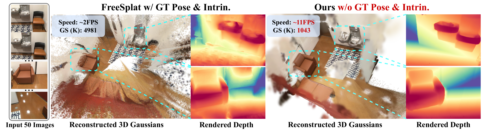
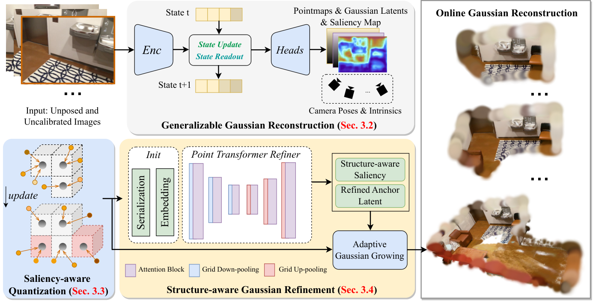
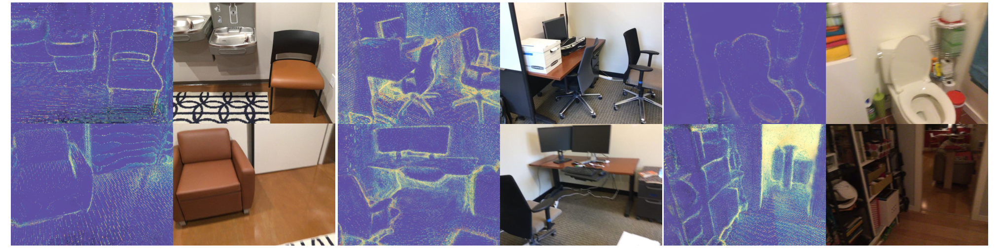
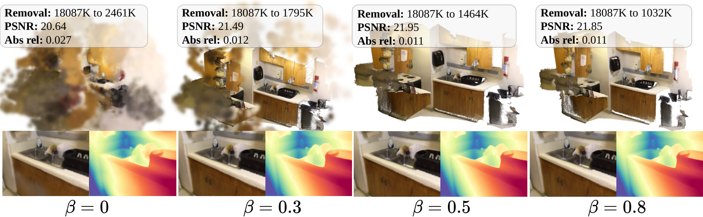
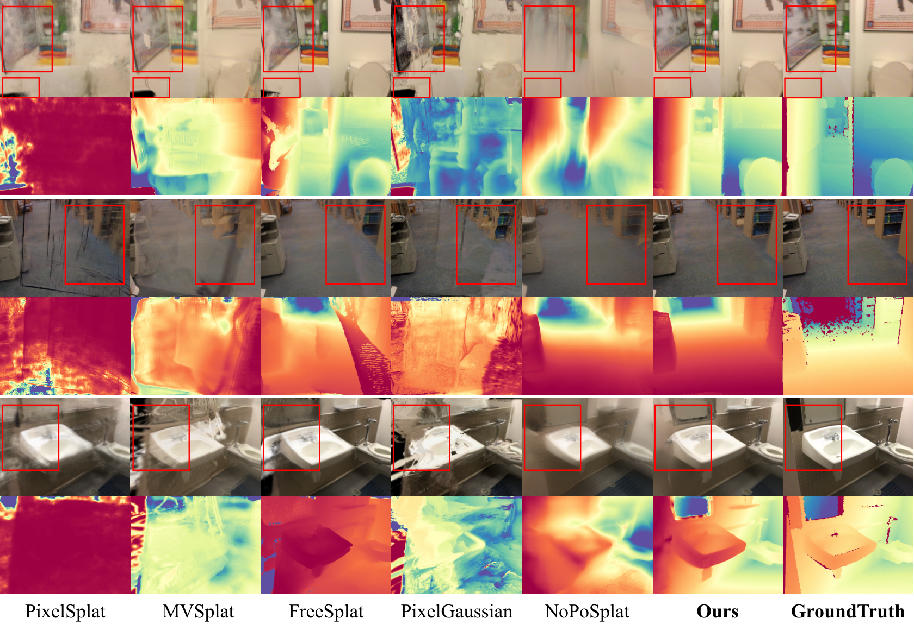
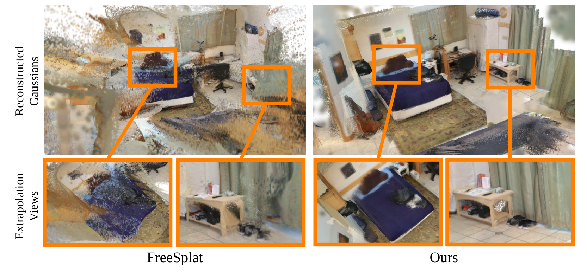
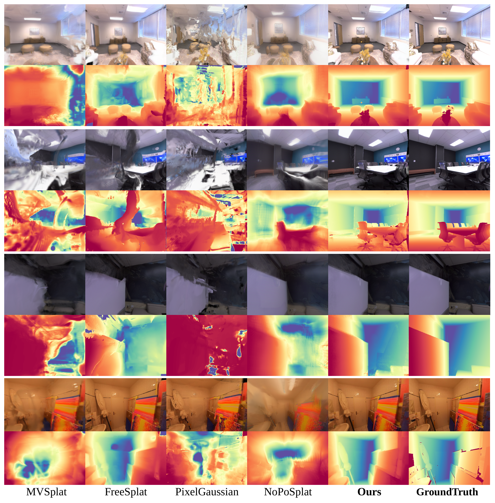
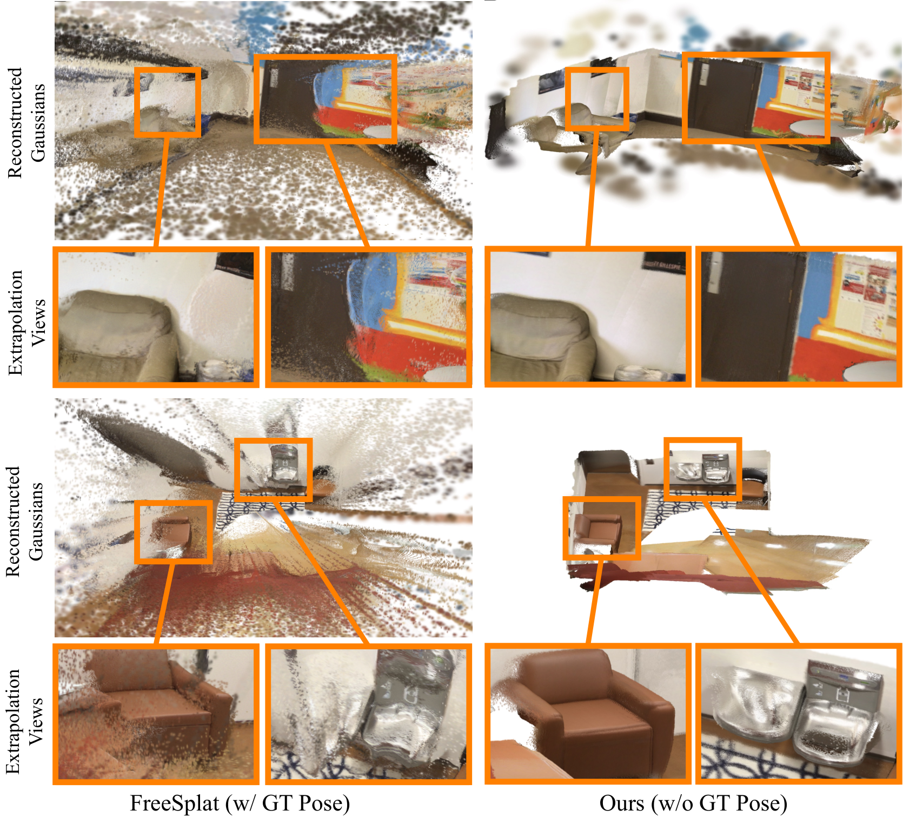

一句话:SaLon3R 在无位姿无标定的图像流上做在线、前馈的 3DGS 重建——CUT3R backbone 逐帧预测 pointmap 与像素级高斯,用显著性感知的体素量化把冗余像素高斯压缩成紧凑 anchor,再用 Point Transformer V3 在 3D 空间里学习结构先验细化 anchor,最后按细化后的显著性自适应解码回高斯,单帧约 10 FPS、支持 50+ 视角、去除 50%–90% 冗余。
问题-方法-结果:现有 generalizable GS 方法(pixelSplat/FreeSplat 系)把每帧的 per-pixel 高斯直接拼接,长序列下高斯数爆炸(显存 OOM)且跨帧几何/光度不一致(§1)。SaLon3R 把「压缩冗余」和「修复伪影」都搬到 3D 空间做(而非 FreeSplat 式的 2D 特征融合),ScanNet 50 视角下 10.15 FPS、3042K 高斯(对比 NoPoSplat 6422K、FLARE 同量,Table 2);深度 AbsRel 0.030@10v 显著优于全部 pose-required 方法(FreeSplat 0.102)。

主流 generalizable GS 方法(pixelSplat、MVSplat、PixelGaussian 等)"predict per-pixel Gaussian attributes and combine Gaussians from all views as the scene representation"(§1)——每帧每像素一个高斯,视角线性累积。后果:"fail due to large GPU memory consumption by a large number of redundant Gaussians"。实测佐证(Table 1/2):PixelSplat/MVSplat/PixelGaussian 在 30/50 视角档直接无法报告结果(作者注:"Due to the out-of-memory problem from large 3DGS occupation")。
"a degradation in rendering quality due to photometric inconsistency and 3D misalignment arising from reconstruction inaccuracies when addressing long-duration video images"(§1)。backbone(如 CUT3R)在长序列上的位姿/点图漂移,直接拼接会把误差叠加成漂浮点与重影。NoPoSplat/FLARE 在 50v 时 AbsRel 恶化到 1.716/1.814(10v 时 0.390/0.487,Table 2)即为量化证据。
FreeSplat(cross-view feature aggregation + pixel-wise triplet fusion)、PixelGaussian(动态调整分布与数量)、Long-LRM(token 融合 + 剪枝)都在重叠区域的 2D 特征层面做融合。作者的判断:"they mainly utilize 2D features for aggregating the overlapped regions, and lack a holistic structure-aware 3D understanding of the scene to control the adaptive distribution of the 3D Gaussians"(§1);且"only prune in overlapping regions, limiting structure-aware refinement and generalization to extrapolated views"(§4.2)——只处理重叠区,外推视角照样崩。
三条线:① generalizable NVS(NeRF/3DGS 前馈化,pixelSplat/MVSplat);② pose-free 重建(DUSt3R/MASt3R/CUT3R/VGGT 系,NoPoSplat/FLARE 把高斯挂上去);③ 冗余消除(FreeSplat/PixelGaussian/Long-LRM 的 2D 融合)。SaLon3R 位于 ②③ 的交叉:用 ② 的 backbone(CUT3R/VGGT 皆可)拿 pose-free 几何,用 ③ 的目标(去冗余)但换成 3D 结构感知的做法。
输入:无位姿无标定图像流 $\{\mathbf{I}_{t}\}_{t=1}^{N}$;输出:在线更新的全局 3DGS $\mathcal{G}_{t}$(mean $\bm{\mu}$、协方差 $\mathbf{\Sigma}$、不透明度 $\bm{\alpha}$、球谐 $\mathbb{sh}$)与每帧相机内参 $\mathbf{K}_{t}$、外参 $\mathbf{P}_{t}$:
在线性的关键(§3.1):"during inference, only part of the global Gaussian $\mathcal{G}_{t-1}$ that are near the frustum of the current view are extracted to be merged with the current pixel-wise Gaussian latents as input for quantization and refinement"——每帧只取当前视锥附近的历史高斯参与本轮量化与细化,计算量不随序列长度增长。

| 符号 | 定义 | 出处 |
|---|---|---|
| $\mathbf{I}_{t},\ N$ | 第 $t$ 帧无位姿图像;序列长度 | §3.1 |
| $\mathcal{G}=\{\bm{\mu},\mathbf{\Sigma},\bm{\alpha},\mathbb{sh}\}$ | 3DGS 场景表示(mean/covariance/opacity/SH) | §3.1 |
| $\mathbf{K}_{t},\ \mathbf{P}_{t}$($\hat{\mathbf{P}}_{t}$) | 估计的相机内参 / 外参 | 式(1)(3) |
| $\mathbf{F}_{t},\ \mathbf{z}_{t}$ | ViT 图像 tokens;pose token(学运动信息) | §3.2 |
| $\mathbf{s}_{t-1}\to\mathbf{s}_{t}$ | CUT3R 持久状态(state-update 更新) | 式(2) |
| $\hat{\mathbf{X}}_{t}^{\text{self}},\ \hat{\mathbf{X}}_{t}\in\mathbb{R}^{H×W×3}$ | 局部 / 世界坐标 pointmap(高斯中心来源) | 式(3),§3.2 |
| $\hat{\mathbf{G}}_{t}\in\mathbb{R}^{H×W×C}$ | 像素级高斯 latents(DPT-like head 输出) | §3.2 |
| $\mathbf{S}_{t},\ s_i$ | saliency map / 每点全局显著性分(外观+几何复杂度) | §3.2, §3.3 |
| $\gamma$ | 量化体素尺寸(ScanNet 0.005,Replica 0.01) | §3.3, A.2 |
| $\mathbf{v}_{i}=\lfloor\mathbf{x}_{i}/\gamma\rfloor\cdot\gamma$ | 点所属体素中心(floor 量化) | §3.3 |
| $\mathbf{s}^{a}_{k},\ \bm{\mu}^{a}_{k},\ \mathbf{f}^{a}_{k}$ | anchor 的聚合 saliency / 加权中心 / 融合 latent | 式(4) |
| $\mathrm{MLP}_{\mathrm{GS}}$ | anchor latent → anchor 高斯属性 $(\mathbf{\Sigma}^{a},\bm{\alpha}^{a},\mathbb{sh}^{a})$ | §3.3 |
| $\mathbf{h}_{k}^{a}$ | Point Transformer 输出的细化 anchor latent | 式(5) |
| $M$(=4) | 每 anchor 生长的高斯数 | 式(6),§4.1 |
| $\Delta\bm{\mu},\Delta\mathbf{\Sigma},\Delta\bm{\alpha},\Delta\mathbb{sh},\Delta\mathbf{s}$ | $\mathrm{MLP}_{\mathrm{grow}}$ 输出的残差属性 | 式(6) |
| $\bm{\alpha}^{r}_{k,i},\ \beta,\ \mathbf{M}^{r}_{k,i}$ | saliency 调制后的 opacity / 剪枝阈值 / 保留 mask | 式(7) |
| $\mathcal{G}^{r},\ K$ | 最终细化高斯集 / anchor 总数 | 式(8) |
| $\lambda_1,\lambda_2,\lambda_3$ | 损失权重 = 1.0 / 0.05 / 0.0005 | 式(9) |
CUT3R(Wang et al., 2025b)是连续在线重建 transformer,SaLon3R 把它当"几何发动机"并冻结其重建模块权重(§3.4:"We fix the pretrained weights of the reconstruction network (except for Gaussian/saliency prediction) and train other modules";§4.1 重申)。
| 组件 | 配置(论文 §3.2) | 输入 → 输出 |
|---|---|---|
| ViT encoder | CUT3R 自带,逐帧编码 | $\mathbf{I}_t \to \mathbf{F}_t$(图像 tokens) |
| 双互连 decoder | state-update($\mathbf{s}_{t-1}\to\mathbf{s}_{t}$,状态初始化为 learnable tokens)+ state-readout(读历史空间上下文) | $[\mathbf{z}_t,\mathbf{F}_t],\mathbf{s}_{t-1}\to[\mathbf{z}'_t,\mathbf{F}'_t],\mathbf{s}_t$ |
| Head_pts | pointmap 头 | $\mathbf{F}'_t\to\hat{\mathbf{X}}^{\mathrm{self}}_t$(局部系),再经 $\hat{\mathbf{P}}_t$ 转世界系 $\hat{\mathbf{X}}_t\in\mathbb{R}^{H×W×3}$ 作为高斯中心 |
| Head_GS | DPT-like 架构(Ranftl et al., 2021),SaLon3R 新增、可训练 | $\mathbf{F}'_t\to\hat{\mathbf{G}}_t\in\mathbb{R}^{H×W×C}$(高斯 latents)+ $\mathbf{S}_t$(saliency map) |
| Head_pose + 内参 | pose token 出外参;焦距用 Weiszfeld algorithm(Plastiri, 2011)估计 | $\mathbf{z}'_t\to\hat{\mathbf{P}}_t$;内参 $\mathbf{K}_t$ |
backbone 冻结 → 无监督;新增 Head_GS 与 saliency 头仅由下游渲染损失(式(9))训练。评测时的用法(A.2):"we take all the images (target and context) as input to CUT3R, using the estimated poses and intrinsic parameters to render the target view with the Gaussians built from context views"。
这是去冗余的核心。思想:同一空间位置被多帧反复"投票"产生大量近似重复的高斯,把它们按体素聚成 anchor,并用 saliency 决定谁在聚合中占主导。
体素化:$\mathbf{v}_{i}=\lfloor\mathbf{x}_{i}/\gamma\rfloor\cdot\gamma$。对落入同一体素的 $L$ 个点(saliency $s_i$、latent $\mathbf{f}_i$):
再经 $\mathrm{MLP}_{\mathrm{GS}}$ 解出 anchor 高斯属性 $\{\mathbf{\Sigma}^{a}_{k},\bm{\alpha}^{a}_{k},\mathbb{sh}^{a}_{k}\}=\mathrm{MLP}_{\mathrm{GS}}(\mathbf{f}^{a}_{k})$。
朴素体素平均(论文 Baseline "+ Quant.",Table 5)会让重要结构被多数平庸点稀释;saliency 加权使"more salient points contribute more significantly to the fused representation"(§3.3)。消融:+Quant. PSNR 从 20.78 掉到 16.95(信息损失),+Sal. Quant. 回到 18.06,显著性找回 1.1 dB。
由 backbone 的 saliency map 头预测,"captures the geometric and photometric complexity of different regions spatially"(§3.2);"learnable and only trained with rendering loss without any ground truth"(§3.3)——无显式监督,是渲染梯度反传塑造的注意力地图。渲染可视化见论文 Fig. 6(本笔记图6)。
每帧只对"当前视锥附近"的历史高斯做量化合并(§3.1),远离当前视场的部分原样保留——避免每帧重处理全部历史,使 FPS 不随帧数崩塌(Table 4:200 视角仍 9.53 FPS)。
ScanNet γ=0.005、Replica γ=0.01(A.2)。Table 6 消融(Replica office02,30 views):γ=0(不量化)5629K 高斯 / 7.56 FPS;γ=0.01 → 2005K / 9.85 FPS 且 PSNR 反而最高(25.04);γ 到 0.02 时量化损失显现(506K 但 PSNR 24.53、LPIPS 0.470)。量化不只是压缩,适度量化本身有去噪/正则效应(0.005/0.01 档 PSNR 高于不量化)——这与 MoGe-3 的邻域聚合平滑直觉一致,详见 §12。
量化本身无参数;$\mathrm{MLP}_{\mathrm{GS}}$ 与 saliency 头由渲染损失端到端训练。体素分配是硬 floor 操作,梯度不经坐标路径(与 MoGe-3 的体素化同理)。
量化解决了"冗余",但聚合本身会引入模糊与错位(消融:+Quant. 后 PSNR 暴跌 3.8 dB)。Point Transformer 的职责是在 3D 空间里学习结构先验,修复 anchor 的属性与 saliency——这是论文标题 "Structure-aware" 的落点。
| 组件 | 配置(论文 §3.4) | 说明 |
|---|---|---|
| 骨干 | Point Transformer V3(Wu et al., 2024;Chen et al., 2024) | 直接采用,非自研 |
| 序列化 | z-order curve 与 Hilbert curve 把点位置映射为整数序 | 空间填充曲线保局部性,使后续 patch 划分近似 3D 邻域划分 |
| U-Net | 五级 encoder(每级 grid pooling 下采样 + attention blocks)+ 对称 decoder(上采样 + attention) | 多尺度捕获局部与全局结构 |
| 注意力 | patch attention:点分组为 non-overlapping patches,patch 内做注意力(局部注意力) | 复杂度随点数近线性,支撑在线速度 |
| 输入特征 | anchor 高斯属性 + anchor saliency 拼接 | 几何(Σ,μ)+ 光度(sh)+ 显著性(s)全量输入 |
| 输出 | 细化 anchor latent $\mathbf{h}^{a}_{k}$(供 MLP_grow 解码) | 同时细化属性与 saliency(§1:"refine anchor attributes and saliency") |
无独立监督;仅渲染损失(式 9)经解码器回传(§3.4)。saliency 同样无 GT(§3.3)。渲染的 saliency 可视化见论文 Fig. 6(本笔记图6):高 saliency 集中在高频纹理与大深度梯度区。

细化后的 anchor 仍是"压缩态",渲染前需要按区域复杂度自适应地长回不同数量的高斯——这是质量控制与数量控制的最后一道闸。

仅渲染损失(式 9)。剪枝 mask $\mathbf{M}^r$ 是硬阈值(不可导),但 opacity 本身可导,训练时梯度经 $\bm{\alpha}^r$ 路径流动(阈值行为类似 detach 的 gate,论文未特殊说明)。
| 损失项 | 说明 | 权重 | 作用 | 出处 |
|---|---|---|---|---|
| $\mathcal{L}_{1}$ | L1 光度损失(渲染 target 图 vs GT) | 1.0 | 主光度监督 | 式(9) |
| $\mathcal{L}_{\mathrm{LPIPS}}$ | 感知损失(follow pixelSplat, Charatan et al., 2024) | 0.05 | 感知质量 | 式(9) |
| $\mathcal{L}_{\mathrm{smooth}}$ | edge-aware 深度正则(作用于渲染深度) | 0.0005 | 约束表面平滑;消融 +0.09 PSNR、AbsRel 0.078→0.030(Table 5) | 式(9),Table 5 |
saliency 无独立监督("only trained with rendering loss without any ground truth",§3.3)——它是渲染梯度的"副产品",类似 NeRF 中密度场的涌现。训练采样:随机采 context views、其余作 target views,显式训练外推能力(§3.4)。
| 项 | 值 | 出处 |
|---|---|---|
| 训练数据 | ScanNet 100 scenes 训练 / 8 scenes 测试(follow FreeSplat 划分);context 重叠度压到 15%–50%(更难设定);跨数据集 zero-shot:Replica、ScanNet++ | §4.1 |
| 公平性协议 | 所有对比方法在同一 ScanNet 数据上基于其预训练权重重训,同一验证设定("we retrain all the methods on ScanNet based on their pretrained weights") | §4.1 |
| 分辨率 | 512×384(ScanNet/ScanNet++,follow Wang et al., 2024c) | A.2 |
| batch size | 1 | A.2 |
| view 配置 | N=8 帧/样本,随机 2–6 帧为 context、其余为 target | A.2 |
| 优化器 | Adam,初始 lr $1×10^{-5}$,linear warmup + cosine decay | A.2 |
| 可训练模块 | Point Transformer + Head_GS + MLP_GS + MLP_grow;CUT3R 场景重建模块冻结(VGGT 版同样固定预训练权重) | §3.4, §4.1, A.2 |
| 量化分辨率 γ | ScanNet 0.005;Replica 0.01 | A.2 |
| 硬件/环境 | NVIDIA RTX A100;PyTorch 2.5.1;CUDA 12.6 | A.1 |
| 训练时长/总迭代 | 原文未报告 | — |
两篇同批调研的论文在"如何保护预训练 backbone"上给出相反答案:MoGe-3 选择联合微调(前 5000 步隔离、后导通),并证明联合训练本身有收益;SaLon3R 选择彻底冻结 CUT3R,只训练外挂模块。原因可追溯到误差结构:MoGe-3 的 base 本身仍在被同域数据持续监督(双数据流),而 SaLon3R 的 CUT3R 若放开,ScanNet 单域 100 scene 很可能破坏其跨域几何能力——【推测】冻结也是小训练集下的防御性选择。对下游使用者的含义:SaLon3R 的可训练部分参数量小,复现成本主要在数据管线与 PTV3 实现,而非算力。
注意训练与推理的 view 数不对齐:训练 N=8(2-6 context),推理可至 200 context(Table 4)——长序列能力来自逐帧增量设计而非训练时见过长序列,这是"online generalizable"声明的实质。
page 分支(项目主页静态文件),无任何训练/推理代码,README 仅一行「# SaLon3R project page」;项目页 "Code" 按钮 href 指向该仓库但页面标注 disabled。因此本节所有工程数值只能来自论文原文(A.1/A.2/§4.1),无法像 MoGe-3 笔记那样做"宣称 vs 实现"核对;凡论文未披露项一律如实标注,本节可信度等级低于有源码验证的笔记。论文亦未承诺开源时间。| 项 | 值 | 出处 |
|---|---|---|
| 硬件 | NVIDIA RTX A100(单卡) | A.1 |
| 框架 | PyTorch 2.5.1 + CUDA 12.6 | A.1 |
| 训练输入 | 512×384,batch 1,N=8(2-6 context) | A.2 |
| 优化 | Adam,lr 1e-5,linear warmup + cosine decay | A.2 |
| 量化 γ | ScanNet 0.005 / Replica 0.01(世界坐标单位,随场景尺度) | A.2 |
| 生长数 M | 4 | §4.1 |
| 剪枝阈值 β | Fig. 5 消融 0 / 0.5 / 0.8;默认值原文未明确写出 【待核实】(从 Fig. 5 措辞"β=0.5 显著提升"推断默认在 0.5 附近) | §4.3 |
| 训练时长 / 总迭代数 / 显存 | 均未披露 | — |
| 项 | 值 | 出处/口径 |
|---|---|---|
| 推理速度(50v) | 10.15 FPS(≈98.5 ms/帧含渲染?论文未说明 FPS 口径是逐帧重建还是含渲染) 【待核实】 | Table 2 |
| 推理速度(200v) | 9.53 FPS——长序列下速度衰减很小(50v→200v 仅 -6.1%) | Table 4 |
| 高斯数(50v) | 3042K(Ours)/ 2897K(w/ VGGT);NoPoSplat 6422K、FLARE 6422K、FreeSplat 4981K | Table 2,单位 K(§4.1 表注) |
| 压缩率 | 50v 对 NoPoSplat ≈52.6% 去除;teaser 口径 9830K→1043K ≈ 89.4%;摘要"50%–90%"区间与两端一致 | Table 2 / Fig. 1,本笔记 §11.6 复核 |
| 可训练参数量 | 未披露(PTV3 + 三个头/MLP;【推测】千万级以下,因 PT 被称 lightweight) | — |
| PF | 方法 | PSNR↑ 10v | SSIM↑ | LPIPS↓ | PSNR↑ 30v | SSIM↑ | LPIPS↓ | PSNR↑ 50v | SSIM↑ | LPIPS↓ |
|---|---|---|---|---|---|---|---|---|---|---|
| ✗ | PixelSplat | 17.77 | 0.572 | 0.505 | — | — | — | — | — | — |
| ✗ | MVSplat | 17.74 | 0.643 | 0.411 | — | — | — | — | — | — |
| ✗ | FreeSplat | 23.24 | 0.785 | 0.266 | 21.16 | 0.704 | 0.342 | 19.90 | 0.702 | 0.365 |
| ✗ | PixelGaussian | 17.41 | 0.601 | 0.429 | — | — | — | — | — | — |
| ✓ | NoPoSplat | 18.46 | 0.652 | 0.396 | 17.03 | 0.637 | 0.506 | 15.71 | 0.574 | 0.515 |
| ✓ | FLARE | 18.24 | 0.691 | 0.403 | 16.21 | 0.602 | 0.434 | 15.92 | 0.566 | 0.577 |
| ✓ | Ours(CUT3R) | 22.54 | 0.750 | 0.337 | 20.47 | 0.679 | 0.384 | 19.78 | 0.682 | 0.392 |
| ✓ | Ours w/ VGGT | 23.26 | 0.805 | 0.289 | 21.25 | 0.728 | 0.384 | 20.26 | 0.720 | 0.377 |
"—" = OOM(§4.1 原文):PixelSplat/MVSplat/PixelGaussian 在 30/50 视角因高斯数爆炸无法评测。读法:pose-free 组内 SaLon3R 大幅领先(NoPoSplat 50v PSNR 15.71 vs Ours 19.78);与 pose-required 的 FreeSplat 比,10v 略低(22.54 vs 23.24)、VGGT 版反超(23.26),50v 反超(19.78/20.26 vs 19.90)——长序列下 pose-free 反超 pose-required,这是本文最有分量的现象。
| PF | 方法 | AbsRel↓ 10v | δ₁↑ | FPS↑ | GS(K)↓ | AbsRel↓ 30v | δ₁↑ | FPS↑ | GS(K)↓ | AbsRel↓ 50v | δ₁↑ | FPS↑ | GS(K)↓ |
|---|---|---|---|---|---|---|---|---|---|---|---|---|---|
| ✗ | PixelSplat | 0.680 | 0.715 | 1.15 | 5898 | — | — | — | — | — | — | — | — |
| ✗ | MVSplat | 0.331 | 0.811 | 2.11 | 1966 | — | — | — | — | — | — | — | — |
| ✗ | FreeSplat | 0.102 | 0.973 | 3.66 | 1082 | 0.411 | 0.894 | 2.87 | 2934 | 0.346 | 0.904 | 2.36 | 4981 |
| ✗ | PixelGaussian | 0.392 | 0.766 | 3.05 | 2952 | — | — | — | — | — | — | — | — |
| ✓ | NoPoSplat | 0.390 | 0.794 | 3.59 | 1180 | 1.185 | 0.559 | 1.24 | 3801 | 1.716 | 0.463 | 0.91 | 6422 |
| ✓ | FLARE | 0.487 | 0.802 | 3.32 | 1180 | 1.212 | 0.543 | 1.13 | 3801 | 1.814 | 0.489 | 0.85 | 6422 |
| ✓ | Ours | 0.030 | 0.977 | 10.16 | 866 | 0.060 | 0.953 | 10.10 | 2073 | 0.068 | 0.972 | 10.15 | 3042 |
| ✓ | Ours w/ VGGT | 0.030 | 0.978 | 10.53 | 853 | 0.051 | 0.960 | 10.72 | 1972 | 0.062 | 0.974 | 10.66 | 2897 |
三个关键现象:① 深度优势数量级级——10v AbsRel 0.030 vs 最佳 pose-required(FreeSplat)0.102,约 3.4×;且 NoPoSplat/FLARE 在 50v 崩到 1.7/1.8 时 SaLon3R 反而稳定在 0.068(长序列一致性是 PT 细化的直接收益)。② 速度不随视角塌:10.16→10.15 FPS(10v→50v),对手全部 ≤3.7 FPS 且随视角恶化。③ 高斯数亚线性增长:866K→3042K(10v→50v,视角 5× 而高斯仅 3.5×),NoPoSplat 是 1180K→6422K(5.4×)。
| PF | 方法 | Rep PSNR↑ | SSIM↑ | LPIPS↓ | AbsRel↓ | δ₁↑ | SN++ PSNR↑ | SSIM↑ | LPIPS↓ | AbsRel↓ | δ₁↑ |
|---|---|---|---|---|---|---|---|---|---|---|---|
| ✗ | PixelSplat | 16.61 | 0.587 | 0.607 | 4.248 | 0.343 | 17.54 | 0.625 | 0.523 | 0.766 | 0.530 |
| ✗ | MVSplat | 16.85 | 0.642 | 0.436 | 2.119 | 0.610 | 17.01 | 0.606 | 0.446 | 0.875 | 0.577 |
| ✗ | PixelGaussian | 16.12 | 0.593 | 0.668 | 2.865 | 0.591 | 17.46 | 0.608 | 0.491 | 1.182 | 0.574 |
| ✗ | FreeSplat | 18.92 | 0.719 | 0.369 | 1.485 | 0.790 | 22.56 | 0.769 | 0.258 | 0.350 | 0.828 |
| ✓ | NoPoSplat | 16.72 | 0.674 | 0.446 | 1.723 | 0.792 | 17.02 | 0.667 | 0.546 | 0.658 | 0.647 |
| ✓ | FLARE | 16.75 | 0.667 | 0.431 | 1.497 | 0.710 | 16.91 | 0.659 | 0.471 | 0.696 | 0.609 |
| ✓ | Ours | 20.79 | 0.683 | 0.312 | 0.712 | 0.917 | 22.08 | 0.694 | 0.372 | 0.104 | 0.921 |
| ✓ | Ours w/ VGGT | 21.05 | 0.728 | 0.301 | 0.704 | 0.925 | 22.40 | 0.743 | 0.346 | 0.095 | 0.931 |
Zero-shot 下 PSNR 超全部 pose-free 对手 4 dB 以上,深度 AbsRel(Replica 0.712、ScanNet++ 0.104)同样大幅领先;RGB 指标上 FreeSplat 在 ScanNet++ 的 SSIM/LPIPS 仍最佳(pose-required 的信息优势),但深度被 SaLon3R 碾压(0.350→0.104)。
| 方法 | 30v AbsRel↓ | SqRel↓ | RMSE↓ | RMSElog↓ | δ₁↑ | 50v AbsRel↓ | SqRel↓ | RMSE↓ | δ₁↑ |
|---|---|---|---|---|---|---|---|---|---|
| FreeSplat(pose-required) | 0.411 | 0.760 | 0.929 | 0.436 | 0.894 | 0.346 | 0.443 | 0.821 | 0.904 |
| NoPoSplat | 1.185 | 0.935 | 1.205 | 0.803 | 0.559 | 1.716 | 4.801 | 1.359 | 0.463 |
| Ours | 0.060 | 0.017 | 0.171 | 0.135 | 0.953 | 0.068 | 0.045 | 0.232 | 0.972 |
Table 8(10v ScanNet 完整深度):Ours AbsRel 0.030 / SqRel 0.017 / RMSE 0.149 / RMSElog 0.084 / δ₁ 0.977,五项全胜。Table 9(Replica/ScanNet++ 深度):Ours Replica RMSElog 0.159(FreeSplat 0.373)、ScanNet++ AbsRel 0.104(FreeSplat 0.350)。
| 论文声明 | 支撑数据复核 | 结论 |
|---|---|---|
| "first online generalizable GS method capable of reconstructing over 50 views in over 10 FPS"(摘要) | Table 2:50v FPS=10.15 ✓;但 Table 4:100v=9.72、200v=9.53(<10) | 50 视角档严格成立;"over 50 views"读作"50 以上任意视角仍 ≥10"则不成立【待核实】措辞争议 |
| "50% to 90% redundancy removal"(摘要) | 50v 对 NoPoSplat:1-3042/6422≈52.6%;10v 对 PixelSplat:1-866/5898≈85.3%;Fig. 1:1-1043/9830≈89.4% | 区间两端均有出处 ✓(90% 端为 teaser 口径) |
| "reducing GS from 9830K to 1043K with nearly 90%"(Fig. 1) | 正文无任何表格对应 9830K;1043K 接近 Table 5 量化变体的量级(616K-866K)但不等 | 仅图注口径,实验条件未说明【待核实】 |
| "significantly outperforms pose-required methods in depth estimation"(§1) | 10v AbsRel 0.030 vs FreeSplat 0.102(3.4×);50v 0.068 vs 0.346(5.1×) | 成立 ✓ |
| "achieves state-of-the-art results in novel view synthesis"(§1) | 10v PSNR Ours 22.54 < FreeSplat 23.24(pose-required);w/ VGGT 23.26 反超 0.02 | CUT3R 版对 FreeSplat 未全胜,"SOTA" 依赖 VGGT backbone【待核实】措辞偏强 |
| "maintains stable processing speed and Gaussian count even with more context views"(§4.3) | Table 4:FPS 10.23→9.53(稳),GS 939K→3397K(10v→200v,3.6× 增长,"stable" 是相对于线性累积的 20× 而言) | 速度成立;高斯数"stable"是修辞,实为亚线性 ✓ |




| 配置 | PSNR↑ | LPIPS↓ | Abs Rel↓ | GS(K)↓ | Δ 解读 |
|---|---|---|---|---|---|
| Baseline(CUT3R + Gaussian head,无量化) | 20.78 | 0.429 | 0.103 | 1966 | — |
| + Quant.(朴素体素量化) | 16.95 | 0.459 | 0.073 | 616 | PSNR -3.83——量化信息损失巨大,但 AbsRel 反升(0.073):平均化去噪 |
| + Sal. Quant.(saliency 加权) | 18.06 | 0.436 | 0.065 | 616 | +1.11 dB:saliency 保住重要区域 |
| + GS Refiner(PTV3 细化) | 21.65 | 0.358 | 0.054 | 616 | +3.59 dB——结构先验是质量主力,补回并反超 baseline |
| + Adapt. Grow(M=4 生长) | 22.45 | 0.347 | 0.078 | 866 | +0.80 dB,GS +250K(细节配额);AbsRel 略回退(0.078 vs 0.054,生长的噪点) |
| + L_smooth(完整 Ours) | 22.54 | 0.337 | 0.030 | 866 | +0.09 dB,深度大幅改善(0.078→0.030)——平滑正则主要买深度质量 |
读法:量化链路的每一步都有明确分工——压缩(Quant)→ 保重要(Sal)→ 修结构(PT)→ 补细节(Grow)→ 平表面(Smooth)。最反直觉的是 +Quant. 行:PSNR 暴跌的同时 AbsRel 改善,说明朴素平均对"颜色"是破坏、对"几何"是滤波——这也解释了为什么后续组件主要围绕找回外观细节设计。
| γ | PSNR↑ | SSIM↑ | LPIPS↓ | Abs Rel↓ | δ₁↑ | FPS↑ | GS(K)↓ |
|---|---|---|---|---|---|---|---|
| 0(不量化) | 24.43 | 0.829 | 0.270 | 0.048 | 0.990 | 7.56 | 5629 |
| 0.005 | 24.48 | 0.832 | 0.264 | 0.049 | 0.990 | 8.95 | 4169 |
| 0.01(选用) | 25.04 | 0.825 | 0.331 | 0.050 | 0.988 | 9.85 | 2005 |
| 0.015 | 24.84 | 0.772 | 0.436 | 0.064 | 0.972 | 10.03 | 942 |
| 0.02 | 24.53 | 0.758 | 0.470 | 0.092 | 0.953 | 10.15 | 506 |
两个发现:① 适度量化反而提质(γ=0.01 的 PSNR 25.04 > 不量化的 24.43)——量化+细化链路有去噪/正则效应,不只是压缩;② 拐点在 0.015 之后(A.3:"resolution 超过 0.015 时因量化信息损失,RGB 与深度受损"),γ=0.02 时质量全面退化。作者选 0.01 是效率-质量折中。
| Context views | PSNR↑ | LPIPS↓ | Abs Rel↓ | FPS↑ | GS(K)↓ |
|---|---|---|---|---|---|
| 10 | 25.13 | 0.429 | 0.069 | 10.23 | 939 |
| 30 | 24.63 | 0.317 | 0.057 | 9.85 | 2138 |
| 50 | 23.70 | 0.305 | 0.061 | 9.76 | 2905 |
| 100 | 23.05 | 0.321 | 0.069 | 9.72 | 3286 |
| 200 | 23.24 | 0.318 | 0.066 | 9.53 | 3397 |
读法:PSNR 随视角增加缓降(25.13→23.24,作者归因 "photometric inconsistencies" 累积);LPIPS 与深度在 30v 后基本饱和;FPS 从 10.23 缓降到 9.53——速度随序列长度近似常数是"online"声明最硬的证据(视锥局部处理生效);GS 增长亚线性(20× 视角 → 3.6× 高斯)。注意 PSNR 下降方向与"越长越好"的直觉相反,这是 pose-free 长序列的诚实代价。
| 方法 | 年份 | 输入假设 | 几何表示 | 结构先验位置 | 50v PSNR↑ | 50v AbsRel↓ | FPS↑(50v) | GS(K)↓(50v) | 开源 |
|---|---|---|---|---|---|---|---|---|---|
| PixelSplat | 2023/12 | 2 视角 + 已知位姿 | 逐像素高斯 | 2D 极线 Transformer(采样深度候选) | —(OOM) | —(OOM) | 1.15(10v) | 5898(10v) | ✓(官方) |
| MVSplat | 2024/03 | 稀疏视角 + 已知位姿 | 逐像素高斯 | cost volume(平面扫描显式多视图匹配) | —(OOM) | —(OOM) | 2.11(10v) | 1966(10v) | ✓(官方) |
| PixelGaussian | 2024 | 稀疏视角 + 已知位姿 | 逐像素高斯 + 动态数量调整 | 2D 解码器 | —(OOM) | —(OOM) | 3.05(10v) | 2952(10v) | ✓(官方) |
| FreeSplat | 2024/05 | 长序列 + 已知位姿 | 逐像素高斯(pixel-wise triplets) | 2D 跨视图特征融合 + 逐视角对齐合并 | 19.90 | 0.346 | 2.36 | 4981 | ✓(官方) |
| NoPoSplat | 2024/10 | 无位姿(前馈回归) | 逐像素高斯(canonical 坐标) | 光度监督隐式学位姿(无显式结构先验) | 15.71 | 1.716 | 0.91 | 6422 | ✓(官方) |
| FLARE | 2024/12 | 无位姿(位姿回归) | 逐像素高斯 | 显式相机位姿回归头 + 点图 | 15.92 | 1.814 | 0.85 | 6422 | ✓(官方) |
| SaLon3R(本文) | 2025/10 | 无位姿 + 在线长序列 | anchor 化高斯(saliency 量化 + 每 anchor 长 M=4) | 体素量化 → Point Transformer V3(3D 空间结构先验) | 19.78 | 0.068 | 10.15 | 3042 | ✗(仅项目页) |
说明:PixelSplat/MVSplat/PixelGaussian 在 30v/50v 因显存爆掉无法报告(论文 Sec. 4.1 原文:"Due to the out-of-memory problem from large 3DGS occupation..."),故其速度/GS 取 10v 档;NoPoSplat/FLARE 的 50v Abs Rel(1.716/1.814)已超过 1,说明二者在长序列下几何基本崩坏,PSNR 还维持在 ~16 靠的是记忆化渲染而非几何正确。
| 范式 | 代表方法 | 核心先验 | 局限(被谁解决) |
|---|---|---|---|
| 逐像素前馈 3DGS | PixelSplat → MVSplat → PixelGaussian | 极线/cost volume 的 2D 匹配先验 | GS 数随像素线性涨,长序列 OOM(→ FreeSplat/SaLon3R) |
| 长序列逐像素融合 | FreeSplat | 跨视图 2D 融合 + 逐视角对齐 | 需 GT 位姿;对齐误差累积(→ pose-free 系) |
| 位姿自由前馈 | NoPoSplat → FLARE | 光度一致性/位姿回归 | 长序列几何崩坏(Abs Rel>1@50v);冗余未处理(→ 本文) |
| 在线点图 backbone | CUT3R(被本文依赖)、VGGT(本文可插拔对照) | 流式状态更新 / 全局注意力 | 直接出高斯头冗余巨大、无结构细化(→ 本文补上) |
| anchor 化结构精炼(本文) | SaLon3R | saliency 引导体素量化 + PTv3 序列化注意力 | backbone 漂移不可控;无源码;静态假设(→ §15) |
库内交叉链接:backbone 对照见 VGGT 精读笔记;逐像素前馈 3DGS 谱系见 前馈 3D 重建模型综述;3DGS 表示本身的压缩/改进脉络见 3DGS 基础与改进综述;姊妹篇(同批调研)MoGe-3 与本文共享"把几何推理从 2D 抬进 3D 空间"的核心思路——MoGe-3 用稀疏体素壳精炼单图深度,本文用 anchor + PTv3 精炼多视图高斯,可对照阅读两者对"为什么 2D 参数化不够"的论证。
官方仓库(github.com/wrld/SaLon3R)截至 2026-10-09 仅有 page 分支(项目页静态文件),无训练/推理代码、无权重。论文也未给出复现级超参全集(PTv3 的配置沿用了 Point Transformer V3 默认值,但 anchor 特征维数、MLP_grow 结构等关键细节只在正文一笔带过)。想要可运行系统,只能等开源或自行复现——自行复现成本评估见 14.2。
我们 pipeline 的 head_gs/body_gs/scene_gs 拆分同样面临"高斯数随帧数线性涨"的问题。SaLon3R 的式(4)(saliency 加权体素量化,γ=0.005~0.01)提供了一种即插即用的合并策略:对 scene_gs 这类静态背景,可直接在已有 3DGS checkpoint 上做 saliency(梯度范数代理)加权量化合并,预计压缩率参考 Table 2(50% 量级)——不需要 PTv3 主干也能拿到量化这一步的收益(消融链中 +Quant. 单独即把 1966K→616K)。
作者自认(A.4)CUT3R 在长序列上位姿/点图漂移导致 view misalignment 与 floating points。vggt_human 输入若为多机位长视频,直接套在线 backbone 风险高;我们已有 COLMAP 位姿,反而落在 FreeSplat 类"pose-required"的设定里——SaLon3R 对我们的价值在表示层(anchor 化)而非 backbone 层。
| 项 | 成本 | 备注 |
|---|---|---|
| 推理(若有代码) | 低 | ~10 FPS(Table 2/4,硬件型号论文未披露,【待核实】);50v 时 3042K 高斯,单卡 24GB 应充裕 |
| 训练算力 | 中 | backbone 冻结(CUT3R/VGGT),只训 Gaussian Head + Refinement 网络;8×A100、3 天(论文 §4.1) |
| 训练数据 | 中高 | ScanNet 等室内数据集(与 CUT3R/FLARE 训练集同源);需逐帧 RGB,无需位姿标注(backbone 自己出) |
| 自行复现 | 高 | 缺 MLP_grow 结构、PTv3 接入细节、saliency 计算口径(梯度范数的具体定义)等;PTv3 本身开源(Pointcept),量化与 Growing 逻辑论文描述足够,估计 1-2 周复现核心管线,【推测】 |
两者同为"把几何推理抬进 3D 空间"(MoGe-3:稀疏体素壳 + 子流形稀疏卷积;SaLon3R:anchor 量化 + PTv3),但任务正交:MoGe-3 修单图几何细节(输出深度/点图),SaLon3R 压多视图高斯冗余并在线细化(输出 3DGS)。若 pipeline 是"单目初始化 → 多视图在线重建",两者可串联:MoGe-3 出高质量几何先验供初始化,SaLon3R 类方法负责长序列一致化与压缩。详见 MoGe-3 笔记。
按规范从方法、数据与评估、工程实用性三维度给出,每条带证据(论文章节)与改进建议。
问题:作者自认(A.4):"CUT3R is prone to drift in estimated camera poses and reconstructed pointmaps, leading to view misalignment and floating points"。量化只能合并"已经重合"的观测,对漂移造成的"同一面墙被建成两面"无法修复——体素壳恰好把两个漂移副本当成不同 anchor 都保留下来。Table 4 的 PSNR 缓降(25.13→23.24)即漂移累积的量化证据。建议:作者给出的方向(keyframe selection + bundle adjustment 全局对齐)是正道;更激进的方案是在 anchor 空间做回环检测(PTv3 特征本身可做 place recognition),漂移段整体刚体校正后再量化。
问题:仓库仅 page 分支(§10)。本笔记 §11.6 复核发现摘要 ">10 FPS" 与 Table 4(100v/200v 为 9.72/9.53)存在口径张力,"9830K→1043K" 仅见 teaser 图注——这类张力在有代码时本可通过跑一遍澄清,现在只能停留在文本层面。建议:关注 IJCV 2026 正式版与相机就绪版是否附带开源;引用本文效率数字时务必注明档位与出处(§11.6 三列表可直接引用)。
问题:作者自认(结论 §5 / A.4):"designed for static reconstruction and may get degraded in a dynamic scene"。在线设定本来最吸引人的就是实时视频流,但动态物体会被量化模块错误地合并进静态 anchor 或直接长成 ghost 高斯。建议:作者 future work(动态 4D:动静态区域分流、时序更新动态区域、temporal appearance residuals)方向合理;短期工程上可先用现成视频分割(如 SAM 系)mask 掉动态区域再进管线。
问题:式(4)的 saliency 由 backbone 特征梯度范数计算,是重建损失的间接代理;理论上存在"梯度大但感知不重要"(如高频纹理噪点)与"梯度小但语义关键"(如人脸)的错位。论文未做 saliency 图的人工对齐验证(仅 Fig. 定性展示)。建议:引入感知加权的 saliency(LPIPS 网络特征响应),或学习式 saliency 头用渲染损失直接监督;消融层面补一组"saliency 随机打乱"的对照可量化其真实贡献。
问题:每个 anchor 固定长 M=4 个高斯(§3.4),平面区域浪费配额、复杂区域可能不够;β 剪枝虽有效(Fig. 5)但最优值依场景(0.5/0.8 之间 PSNR 有可见差异),部署期需逐场景调。建议:把 M 改为按 anchor 的 PTv3 特征动态预测(如 categorical 头输出 1/2/4/8);β 可与目标 GS 总量挂钩做闭环控制(每 N 帧按预算自适应调整),这对在线系统的"显存恒定"承诺是刚需。
问题:PixelSplat 等因 OOM 缺 30v/50v 档,长序列档的"胜出"部分建立在对手无法参赛之上;FPS 硬件型号未披露,跨方法速度比(10.15 vs 2.36)只有在同卡假设下成立。建议:引用时注明;后续工作可补分块渲染(memory-capped)协议让所有方法跑满全档位。
| 优先级 | 条目 |
|---|---|
| [高] | ① backbone 漂移;② 无源码不可复核 |
| [中] | ③ 静态假设;④ saliency 无监督;⑤ 固定配额 M/手动 β |
| [低] | ⑥ 评测协议 |
个人认为最关键的三点:②(决定该工作当前对社区的实际可用性)→ ①(决定方法宣称的"long-term"能走多远,也是 Table 4 PSNR 缓降的根因)→ ③(决定"online"卖点的真实应用场景边界)。
SaLon3R 的贡献不是"又一个前馈 3DGS",而是精准命中了前馈重建走向长序列的表示层瓶颈:
从证据质量看,本文的深度指标优势(Abs Rel 0.030@10v,比最佳 pose-required 基线好 3.4 倍)是硬结论;NVS 的 "SOTA" 措辞需要加口径(pose-free 类内部;全档反超需 VGGT backbone 版);效率声明 ">10 FPS" 严格成立于 50v 档(§11.6)。工程上最大的现实障碍是代码未开源,IJCV 2026 刊出后是否释放代码值得跟进。
在前馈 3DGS 的脉络里(§13.3):PixelSplat 系确立"逐像素回归高斯"的表示;MVSplat 把 cost volume 的显式匹配先验带进来;FreeSplat 把它推到长序列但仍要位姿;NoPoSplat/FLARE 甩掉位姿却在长序列上几何崩坏;CUT3R/VGGT 这一代在线点图 backbone 解决了几何来源问题——SaLon3R 是在这条线上第一次把"3D 结构化精炼"作为独立模块立起来的工作。它与姊妹篇 MoGe-3 形成有趣的对照:两者同年提出、同样用"体素化 + 3D 稀疏/序列化注意力"给 2D 前馈网络补 3D 归纳偏置,一个在单目深度的输出端精炼,一个在多视图 3DGS 的表示端精炼——"3D 空间精炼模块"正在成为前馈重建的通用配件范式,这是比单个模型更有生命力的信号。
| 作者 | 机构 | 角色/背景 |
|---|---|---|
| Jiaxin Guo | The Chinese University of Hong Kong(CUHK) | 一作;arXiv 投稿人;项目页仓库所有者(wrld) |
| Tongfan Guan | CUHK | 共同作者 |
| Wenzhen Dong | CUHK | 共同作者 |
| Wenzhao Zheng | University of California, Berkeley | 共同作者;前馈重建/3D 占用方向高产(SSC、Gaussian 系列) |
| Wenting Wang | Hong Kong Center for Logistics Robotics | 共同作者 |
| Yue Wang | Zhejiang University | 共同作者 |
| Yeung Yam | CUHK | 共同作者;CUHK MAE 教授 |
| Yun-Hui Liu | CUHK | 通讯作者;CUHK 机械与自动化工程系教授,机器人视觉方向 |
团队判读:CUHK 机器人视觉组(Yun-Hui Liu 组)+ UC Berkeley(Wenzhao Zheng)+ 浙大合作的组合,机构配置与"面向机器人的在线重建"定位一致(Hong Kong Center for Logistics Robotics 参与)。一作 Jiaxin Guo 同时是项目页与 GitHub 账号所有者,代码若开源最可能从 github.com/wrld/SaLon3R 放出。
| 资源 | 链接 | 状态 |
|---|---|---|
| arXiv 摘要页 | arxiv.org/abs/2510.15072 | v1(2025-10-16);journal-ref: IJCV 2026,DOI 10.1007/s11263-026-02713-4 |
| arXiv HTML 全文 | arxiv.org/html/2510.15072v1 | ✅ 可用(本笔记提取来源) |
| 项目页 | wrld.github.io/SaLon3R | ✅ 在线;含视频与定性结果;论文唯一给出的资源链接 |
| 代码仓库 | github.com/wrld/SaLon3R | ⚠️ 仅 page 分支(项目页静态文件),无源码/权重;git ls-remote 核实(2026-10-09) |
| 依赖组件:CUT3R | github.com/CUT3R/CUT3R | ✅ 开源(backbone 冻结权重来源) |
| 依赖组件:Point Transformer V3 | github.com/Pointcept/Pointcept | ✅ 开源(Pointcept 框架;本文 3D 精炼骨干) |
两个核心依赖(CUT3R、PTv3)均开源,意味着自行复现的主要缺口在"量化 + Growing 头 + 训练管线"的胶水层,而非基础设施(§14.2 复现成本评估)。